×

Installing the Correct Driver
- You may need to download the correct drivers for your device before you can progress (DUB-E100_B1_Driver_3.4.0) is the driver I recommend.
- I downloaded the B1 driver here: https://support.dlink.com/ProductInfo.aspx?m=DUB-E100
- Select the hardware revision B and driver version Driver (3.40) and hit download
- Extract the zip file and install the driver
- Once the driver is installed, your device should be working properly as shown below.
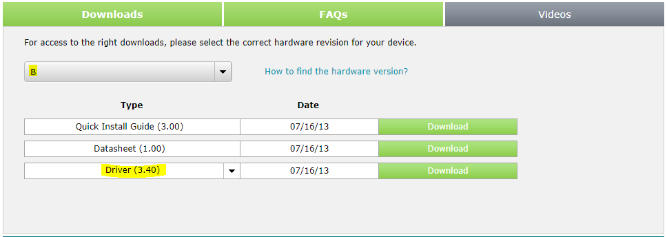
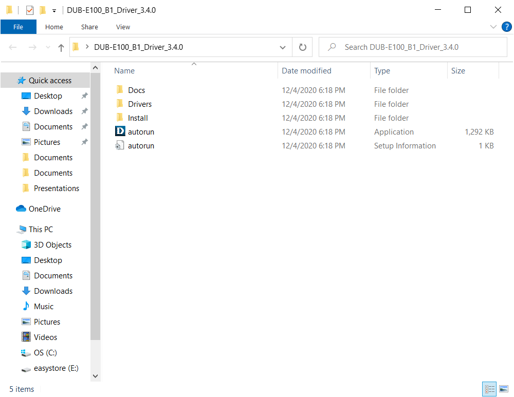
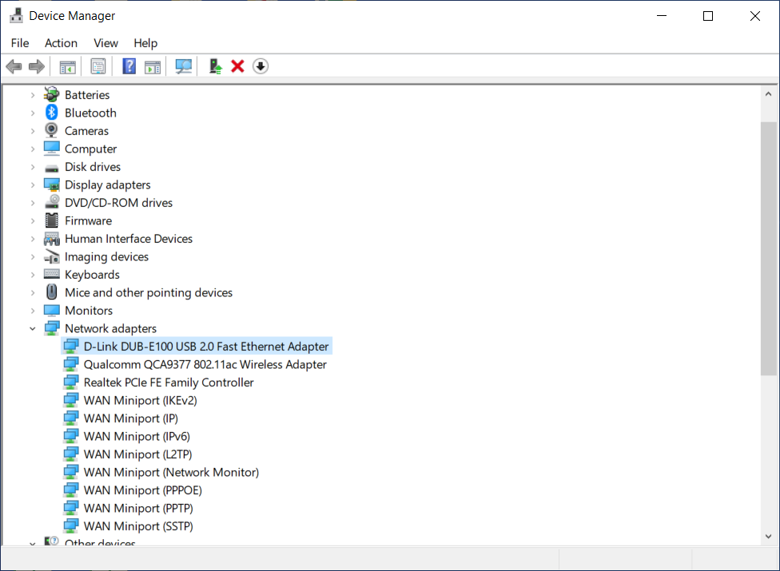
Creating a New Display in Venus1500 Software
- You will need to create a display in the Venus1500 software before you can connect to your sign and add presentations.
- To create a new display click on the Venus logo in the top left of the software and then click Display Manager / Add Display.
- There will be a few pages of settings to fill in when creating a new display. The following settings worked for me. (The order shown below may not be correct)
- When that's taken care of, you can select your new display from the drop down menu in the middle of the screen.
- Note: After creating your new display, it will also appear in the Display Manager Like so:
- Select (Double-Click) your new display.
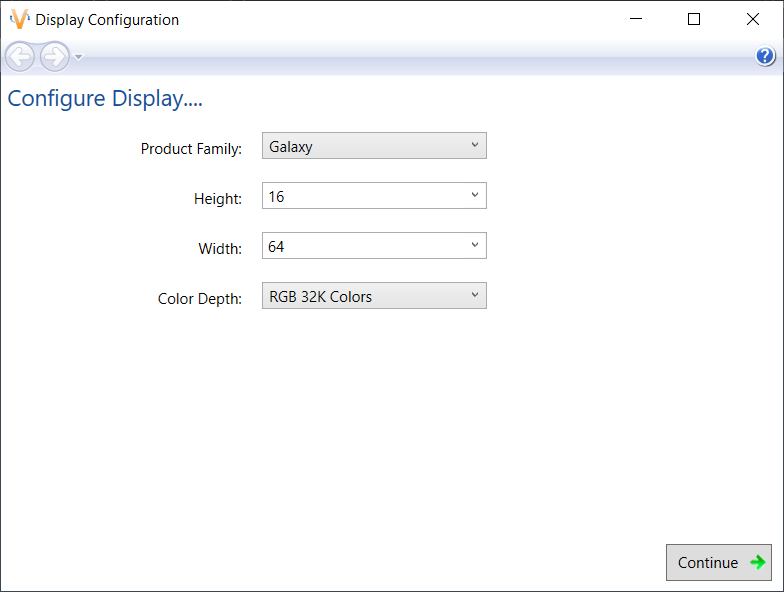
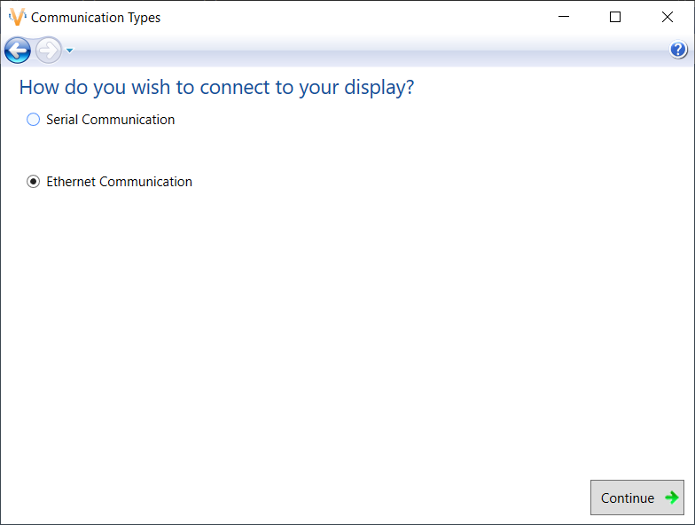
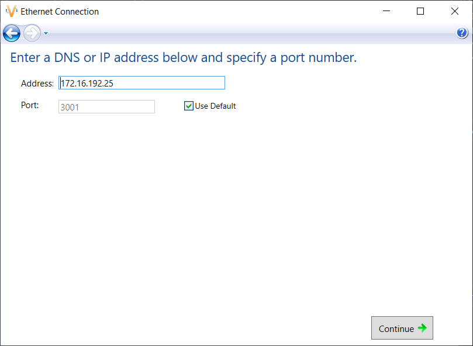
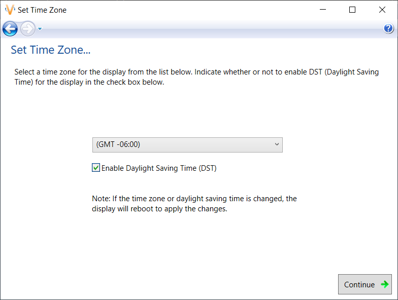
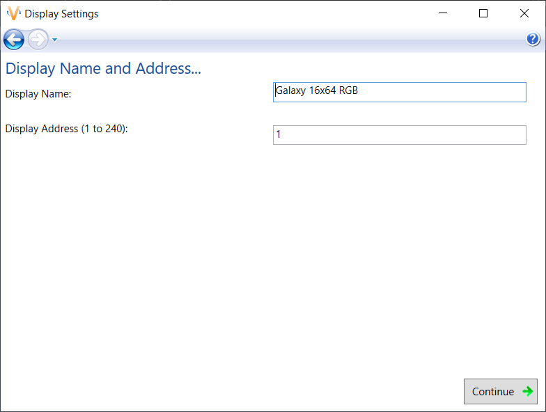
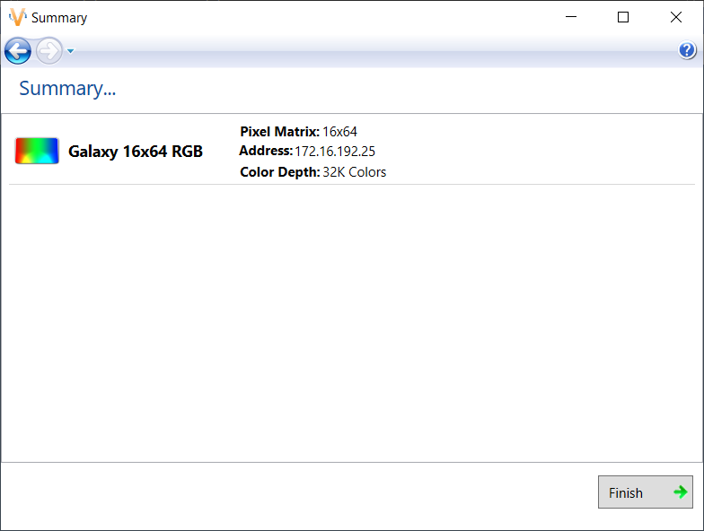

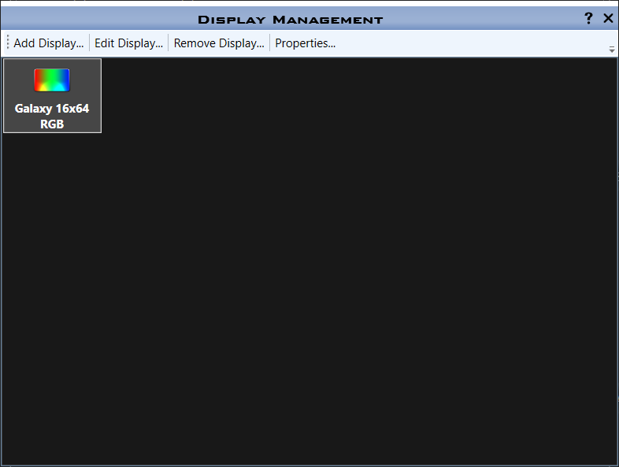
Connecting your Venus1500 Software with your Daktronics Sign
- If you have the Ethernet Bridge Radio Diagnostics software installed it probably looks like this:
- No Radios Found does not mean you cannot connect to your sign.
- For your adapter and your sign to communicate, they cannot have the same IP Address.
- Open the Control Panel by first tapping the windows key on your keyboard or clicking on the windows logo in the bottom left of your screen. Type Control Panel and a suggested app should appear, click on it or hit enter.
- Once the program has loaded up, click on the Network and Internet link.
- Now go to the Network and Sharing Center and click on Change adapter settings
- A new window will appear with a list of Network Connections, one of them will say D-Link DUB-E100 USB 2.0 Fast Eth... like so:
- Right click this connection and click on Properties.
- Click yes if you get a prompt and a new window will appear.
- Click on Internet Protocol Version 4 (TCP/IPv4) and click on the Properties button below.
- Click yes if you get another prompt and a new window will once again appear.
- We need to change the IP address: to something different from the address we gave our display in the Venus1500 Software (172.16.192.25) to (172.16.192.20) as shown in the previous image.
- Hit the OK button and return to the Venus1500 software.
- You should now seee a Display Status bar filled mainly in green on the left.
- If you don't see this, make sure your display is select in the middle drop down box and it couldn't hurt to restart the program.
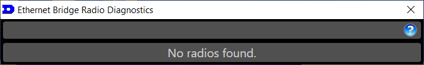
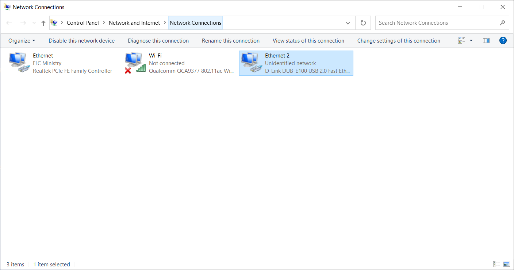
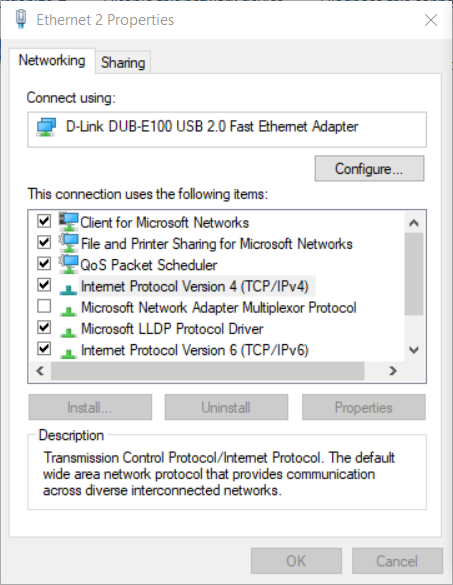
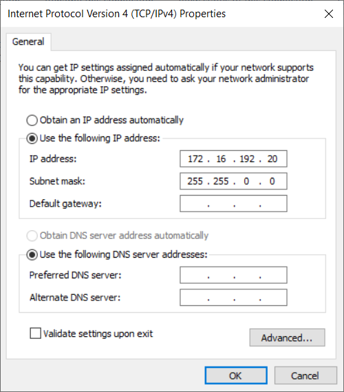
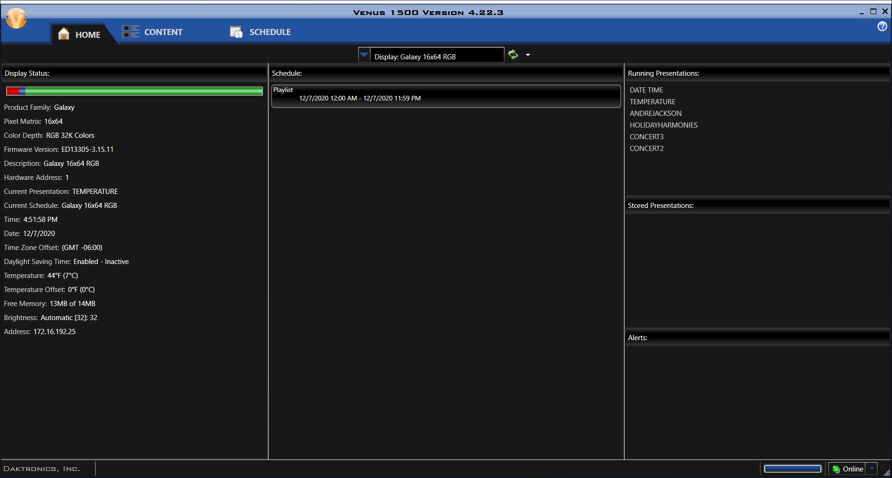
Transfering Presentations from an Old Computer
- To Export your previously created presentations from an old computer, Navigate to your Daktronics folder in your Program Files (x86) folder. Then Click on the Nucleus Server and finally click on the Database Utility Folder C:\Program Files (x86)\Daktronics\Nucleus Server\Database Utility
- Run the application named Nucleus Database Utility.
- Once the program loads up you will see the Save/Export option which can be used when moving presentations from an old computer. Export your presentations to a .nucbak file with a name of your choosing and save said file to a USB.
- Transfer your USB to the new computer and transfer the file to your Desktop (Or wherever you will be able to find it).
- Navigate to your Daktronics folder once again and Run the program once more. C:\Program Files (x86)\Daktronics\Nucleus Server\Database Utility
- This time select the Load/Import option. This option is used when adding your presentations to the new computer.
- Returning to the Venus1500 software and clicking on the Content tab you should see your list of presentations. For example:
- The last thing to do is to add some presentations to your schedule in the Schedule tab, Publish To Display and confirm that the sign has updated and is working properly.
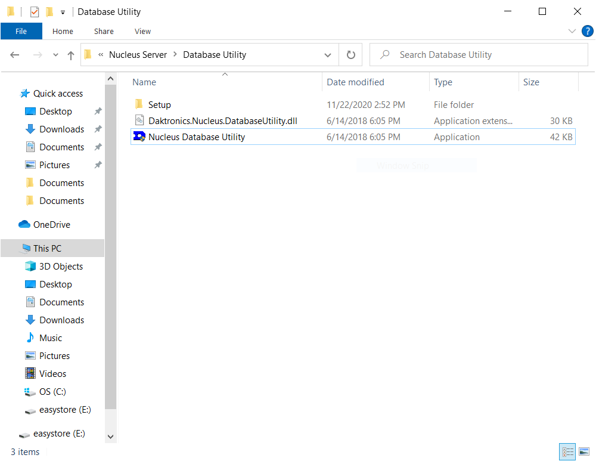
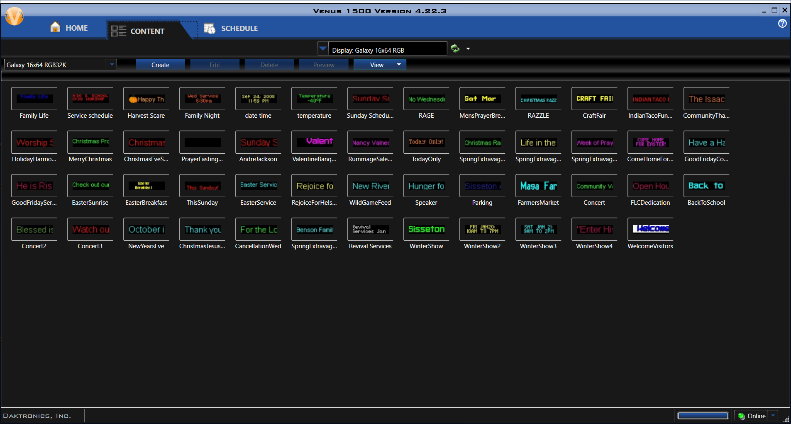
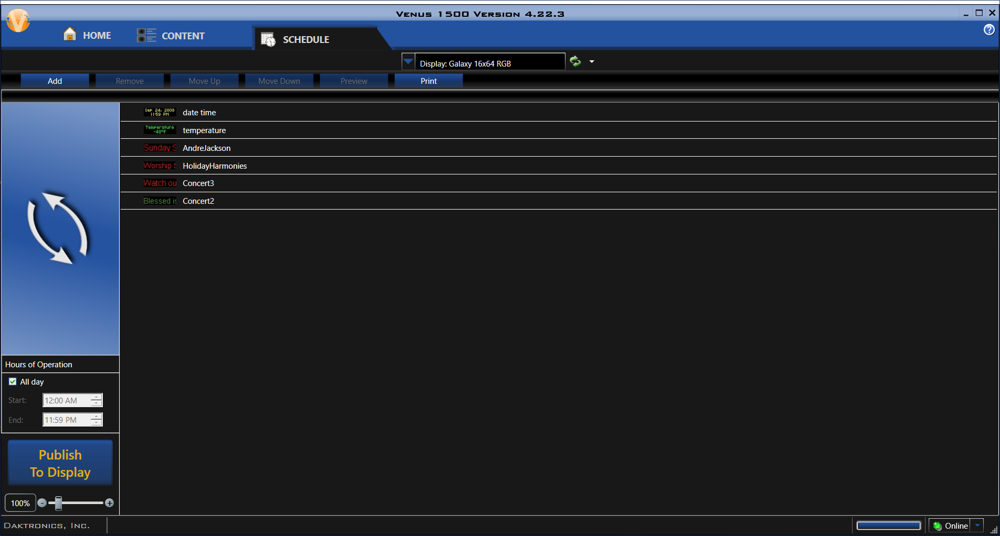